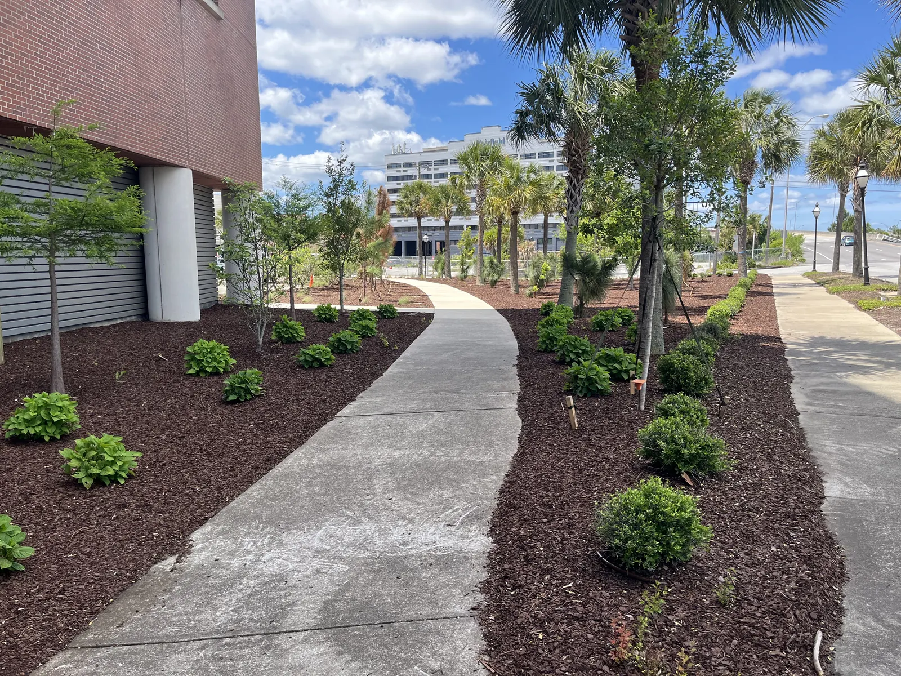

Keeping a Landscape the Shape It Was Designed to Be

Planted at the Size It Starts
A landscape is planted at the size it starts, not the size it was drawn for. Everything on a plan — the hedge line, the layering, the space between a Japanese maple and the house — assumes those plants will be kept at a certain size. Nobody tells the homeowner that, and three years later the design is gone.

What a Planting Plan Actually Assumes
When we lay out a bed we are drawing the yard as it will look in three to five years, not on install day. Plants are spaced for their mature size, which is why a new bed looks a little open at first and why we do not over plant to make it look finished on the day the truck leaves.
The layering is the other half. Heights, textures and eventual sizes are picked so the planting grows together into one picture rather than into a fight for the same space. That only holds if the shaping happens at the right time.
Two things break a design faster than anything else: a hedge left to run past the line it was drawn on, and a tree that was never limbed up, so everything planted beneath it is now in deep shade.
What We Do for Our Own Clients
We are not a mowing company and we do not sell maintenance contracts. What we do is come back for clients whose projects we built.
After a large install, or after a planting has had a season or two to establish, we return to prune and shape the planting as it was intended: hedges held to the line on the plan, trees limbed up where they are shading out the bed below, shrubs cut back into their layer rather than sheared into balls, and beds re-edged and re-mulched so the shapes still read.
It is the cheapest part of a project and it protects the most expensive part of it.

The Parts Worth Knowing Yourself
- Mulch covers the ground — it does not pile against a trunk. Mulch mounded into a cone holds moisture against bark, and the tree it is hurting is usually the most valuable plant on the property. We pull it back off trunks whenever we are in a bed.
- Camellias flower on old wood. Cut them at the wrong point in the year and you have traded a winter of flowers for a tidy shape.
- A hedge wants to be wider at the bottom than the top, or the lower branches lose their light and the base goes bare — which is the one part of a hedge you cannot get back quickly.
- Storm damage is not a pruning job. Anything requiring a climb or a chainsaw overhead belongs to a certified arborist with the right insurance, and we will tell you that rather than take it on.
Design It So There Is Less to Do
The best way to cut the shaping work is to choose plants whose mature size suits the space to begin with. Most overgrown Charleston yards are not a maintenance failure; they are a spacing decision made years earlier.
That is the thinking behind our plant palette — podocarpus, ligustrum and sweet viburnum where a screen has room to be a screen, boxwood where the look is formal and the space is small, and ground cover to finish a bed instead of extra shrubs planted to cover bare soil.
If you are planning a new landscape, our design and installation page covers how that process runs.
What the Industry Standard Says
The national standard for tree care, ANSI A300 Part 1 (Pruning), lists topping among the practices that are not acceptable and can injure trees. It defines topping as reducing a tree's size with heading cuts that shorten limbs back to a predetermined crown limit.1 It is one more reason to plant for a tree's full size rather than cut it back to fit.
References are to the 2021 edition South Carolina enforces today; the 2024 edition takes effect statewide on January 1, 2027. Your local building department decides how any of it applies to a particular property.
Sources
- Tree Care Industry Association, ANSI A300 Part 1: Pruning. Source
Frequently Asked Questions
Do you offer tree and shrub pruning in Charleston?
For clients we have done large projects for. After an install, or once a planting has established, we come back to prune and shape it as it was designed to grow. We are not a general maintenance company and we do not sell mowing plans.
How often does a new landscape need shaping?
It depends on what was planted and how fast it grows here, but the first shaping usually matters once a planting has had a season or two to establish, before hedge lines and layering start to drift.
Why do you space plants so far apart at first?
Because the plan is drawn for how the planting will look in three to five years. A bed packed to look finished on install day becomes a maintenance problem when everything in it is competing for the same space.
Should mulch be piled around a tree trunk?
No. Mulch should cover the ground and stay off the trunk. Piling it against bark holds moisture where you least want it, and the tree is usually the most valuable plant in the yard.
Do you do storm damage or large tree removal?
No. Anything that needs climbing or overhead chainsaw work belongs with a certified arborist who carries the right insurance for it.
Planning a Project of Your Own?
See everything we design and build, or get in touch to talk through your ideas with Doug and Zach.